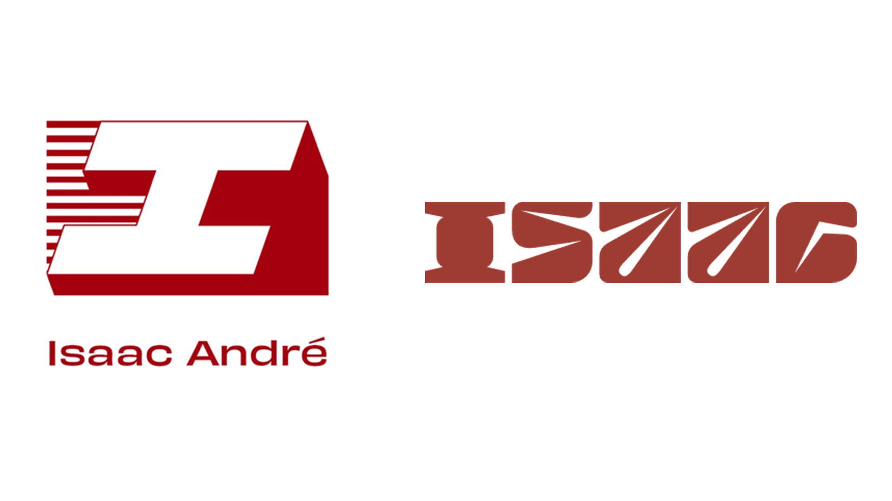
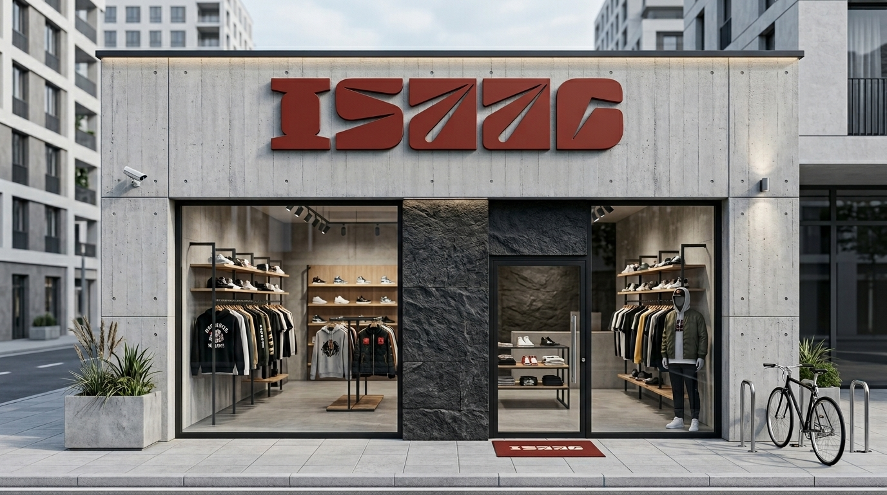
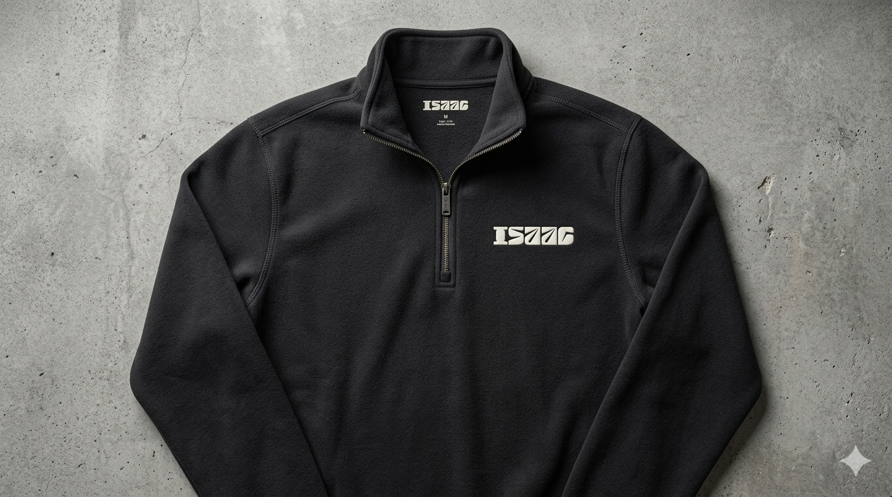
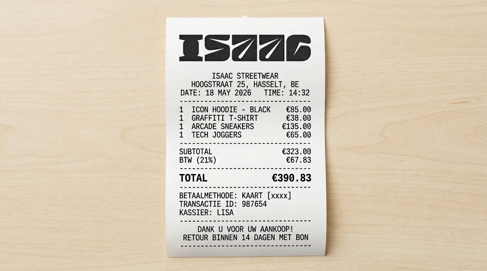

Project
Brand Identity
Discipline
Branding & Direction
Doelgroep
Stedelijke Cultuur
Focus
Brutalisme
01 — Strategie
Just solid gear. Geen concessies.
Bij het creëren van ISAAC was het doel helder: het doorbreken van de weggooicultuur binnen de fast-fashion wereld. Dit streetwear-concept rust op drie fundamentele pijlers: Industrieel Vakmanschap (zware, robuuste materialen gemaakt om te blijven), Radicale Eerlijkheid (transparantie over elke stap in de keten) en een krachtige Community First benadering.
De visuele esthetiek is zwaar geïnspireerd door ruwe architectuur, industrieel beton, staalconstructies en de underground streetwear scene uit steden zoals Antwerpen.
02 — Identity
Logo evolutie & Typografie
Het merk onderging een transformatie van een klassiek, geometrisch serif-lettertype naar een volledig custom, brutalistisch en robuust woordmerk. Dit logo fungeert als statement op kledingstukken, labels én fysieke gevels.
Kleurpalet
Concrete Shadow
Industrial Red
Raw Silver
Pure White
Sfeer & Typografie
Brand Moodboard
Ruwe architectuur & Streetwear fits

Logo Evolutie
Van klassiek serif naar brutalistisch custom
03 — Mockups
Merktoepassingen & Dragers
Om de rauwe identiteit tastbaar te maken, is de branding vertaald naar hoogwaardige kleding-mockups, minimalistische retail-items en een strakke, fysieke winkelgevel.

Retail Storefront Facade
Concept Store — Hoogstraat Hasselt

Icon Quarter Zip Embroidery
Premium Apparel Mockup

Minimalist Monochrome Receipt
Branded Print Media
04 — Documenten
Bekijk & Download de Merkdocumenten
Blader door de volledige strategische keuzes, markt-benchmarks en visuele richtlijnen van dit kledingconcept.
Brand Document PDF ISAAC Brand Guide PDF